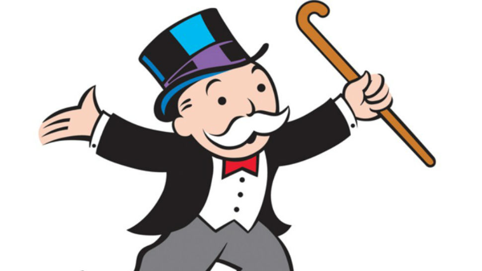
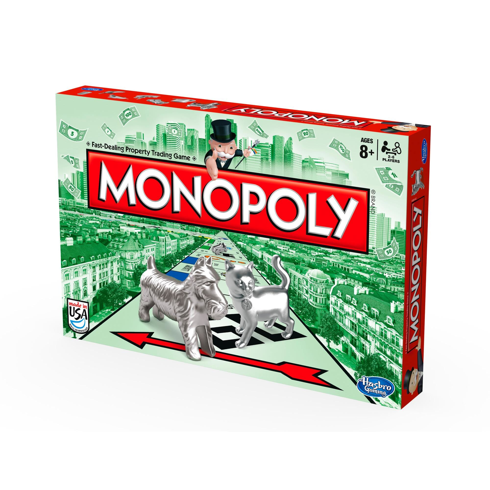

Un juego creado con la función de servir como herramienta para enseñar las teorías acerca de la justicia social y económica extraídas del estudio titulado Progreso y Miseria de Henry George.
Comercializado por vez primera en el año 1936
A lo largo de 80 años el juego a sufrido una notable evolución. Sus multiples ediciones y sus tantas versiones han dado pie a que se cambiara desde la caja que lo contiene hasta los elementos que lo componen. Logrando asi mantener como el favorito a traves de las décadas.
Con los años la finalidad del juego cambio para solo disfrutar un buen rato, negociando propiedads y hasta haciendo uso de medios electrónicos para todas las transacciones que requiere el juego.
